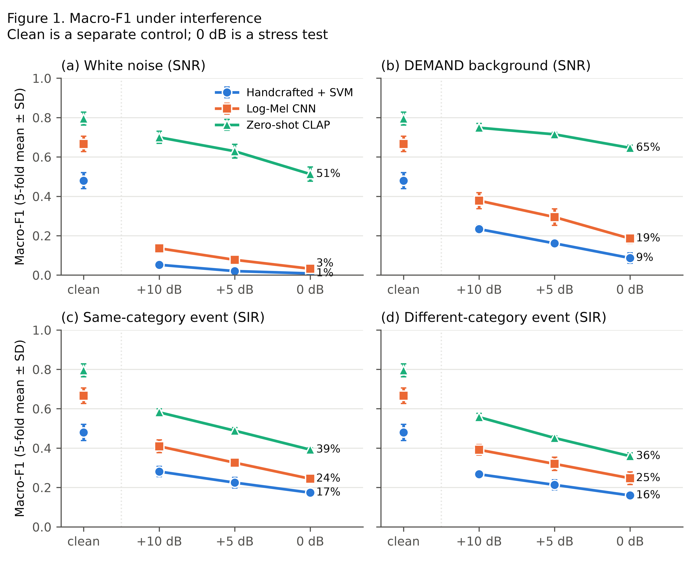
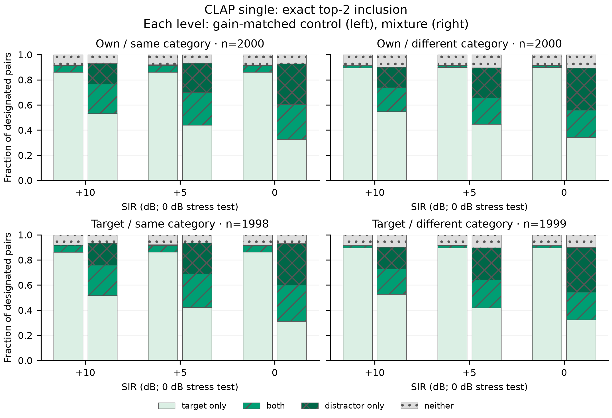
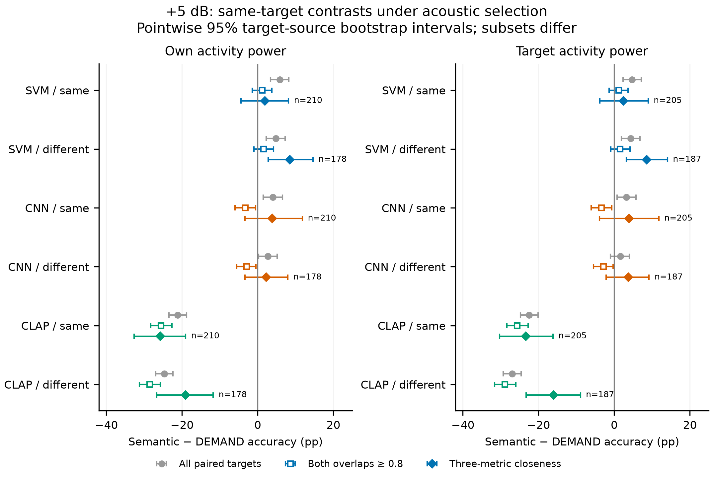
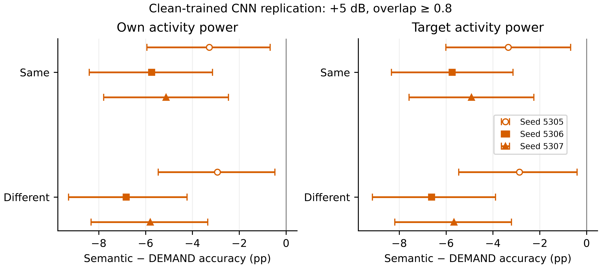

Handcrafted + SVM
92 temporal, spectral and MFCC features with a validation-selected classifier.
—
clean macro-F1Environmental sound classification
What happens when a second recognisable sound competes with the event a classifier is meant to identify?
We mix target recordings with controlled interference, compare three audio representations, and track whether an error names the competing event.
The comparison
The systems have different training histories. This study compares their failure patterns and deployment cost; it does not claim an equal-data training contest.
92 temporal, spectral and MFCC features with a validation-selected classifier.
A small supervised model trained on the official ESC-50 folds.
Audio–text similarity with a fixed checkpoint and one prompt per class.
Values are means over five official test folds. CLAP benefits from external pretraining; it is not fine-tuned here.
Verified core experiment
At +5 dB, the SVM is especially vulnerable to white noise. CLAP retains much stronger performance under ordinary backgrounds than under a competing ESC-50 event.
| Interference | SVM | CNN | CLAP |
|---|

Under own-activity power, on matched high-overlap targets at +5 dB, semantic interference lowers CLAP accuracy by about 26–29 percentage points more than DEMAND. The core CNN difference is about 3 points; its corrected test is inconclusive. Two additional seeds show larger differences, as reported below.
The report includes both power definitions, paired uncertainty intervals and explicit statistical limitations. These high-overlap groups differ from the smaller acoustically close subsets analysed below.
Completed closing analyses
The original models and single-label results are preserved. We re-read saved scores and measure spectral and temporal overlap, including every DEMAND mixture.
The exact top-two readout sorts each designated pair into four states. Two labels are always returned: inclusion is a ranking result, not a calibrated detector or proof that the model heard both sources.
| Pair type / n | Target only | Both | Distractor only | Neither | Target retained among captures |
|---|

We compare the same target under semantic interference and DEMAND only when differences are at most 0.10 in target-active spectral cosine, 0.05 in masked-cell fraction and 0.10 in temporal overlap. Selection uses acoustics alone, identically for all three systems.
| Model | Same category minus DEMAND | Different category minus DEMAND |
|---|
Intervals resample original target-source recordings 2,000 times, conditional on the fitted models and observed pairings. Shared interferer, background and training dependence are not fully captured. Core CNN seed 5305; single-template CLAP.
Across the two power definitions, CLAP remains about 16–26 accuracy points below DEMAND in these subsets. CNN intervals include zero. Only about 9–10.5% of targets are retained; changing the subset changes the population. This does not overturn the larger high-overlap result, quantify a percentage explained, or establish semantic causation. Unmeasured acoustics and salience remain.

Verified extensions
All three clean-trained seeds show the same direction on high-overlap targets. The two additional seeds lose about 5–7 more accuracy points under semantic interference than matched DEMAND at +5 dB; their comparisons pass the declared Holm correction. The core seed alone remains inconclusive.
The same test clips appear in each run. Seeds are reported separately, with no best-seed selection or pooling as independent observations.
Loading… clean accuracy, using the released prompt list identically for every class. The audio embeddings are unchanged; only the text class references differ.
This is a controlled prompt-ensemble ablation, not full PAT. The single-prompt core reference is preserved.

Macro-F1 at +5 dB (%) · Own activity power. Use the power selector in the core-results section to compare the alternative convention.
| Interference | Single prompt | Fixed ensemble |
|---|
The ensemble improves these condition scores, but performance under meaningful competing events remains far below DEMAND. Lower total error can coexist with a higher fraction of errors naming the distractor.
Verified training interventions
Compare clean, white-noise-augmented and semantic-mixture training. The CNN retains all three seeds; each training regime uses clean validation and excludes test audio from augmentation.
| Model / training | Clean | White | DEMAND | Same event | Different event |
|---|
Augmentation probability, view schedule and maximum epoch budget are shared. Actual refit durations are selected separately on clean validation and can differ. The modest CNN advantage from semantic training remains uncertain after multiple-comparison correction.
Deployment evidence
Seven model variants on the same Apple M3 CPU, with one numerical thread and batch size one. One clip per class and fold gives 250 unique clips. Each is timed three times in each of two passes; the second reverses the model order after timing drift was observed.
| Model / training | First median (ms) | Reversed median (ms) | First p95 (ms) | Reversed p95 (ms) |
|---|
Hear the competing event
Four targets from the final own-activity manifest, each chosen to show a different outcome, in all twelve interference conditions. They are illustrations: the results above use all 2,000 targets. Each mixture has a clean control with exactly the same target attenuation. Predictions below use the core CNN seed 5305 and the single-prompt CLAP reference.
Why this target was selected · overview across conditions
Gain-matched target control
Target plus interference
Keep the same playback volume for both. Some examples are quiet; if needed, raise the volume equally for the pair. Examples illustrate behaviour and are not an unbiased performance sample. Playback uses PCM16 exports; predictions were computed on the canonical floating-point waveforms.
Audio sources, changes and licences ↗ Sources for the two added targets ↗Why the controls matter
Each signal is measured where it is active. This avoids enormous gains when a sparse distractor barely overlaps the target, but does not guarantee strong overlap.
Both signals are measured where the target is active, as specified in the original proposal. Three pairs have zero interference energy there and cannot be scaled to a finite requested ratio.
The exact interferer is fixed across levels and models. Semantic distractors come from held-out audio. Ratios are checked numerically, mixtures are never hard-clipped, and every trial has a gain-matched clean control. Manifests record sources, pairing, gains and overlap.
It reveals model-specific robustness and distractor capture under controlled mixtures. Matching power does not match spectral structure, timing or perceptual prominence, so the results do not isolate a causal effect of meaning alone. At 0 dB, either event can be a reasonable single label.
Paired confidence intervals, eight separate handcrafted feature groups, CLAP ranking across all 50 classes, displacement/error association, and an actual MATLAB comparison with the course STFT. The closing analyses add exact top-k states and spectral–temporal matching with complete DEMAND coverage. Experimental scope is now closed. The intervention extension compares clean, white-noise-augmented and semantic-augmented training with three CNN seeds.
Counts distinguish finished training from verified interference evaluations. All declared training and evaluation runs are complete and independently checked. The fixed prompt ensemble is a separate ablation, not a full PAT reproduction.
Working code in action
This real execution starts from the source recordings, verifies +5 dB SIR and the peak level, and computes new SVM, CNN and CLAP predictions. Historical results are checked only after inference.
Actual screen recording with two source-derived audio examples; no author narration. All controls identify can opening. In this selected mixture, CNN and CLAP choose clock alarm; CLAP ranks the target third. Aggregate top-two recovery comes from the complete dataset, not this example. Run it locally and inspect the verification outputs ↗
Why these methods
Course Lectures 3 and 4 explain the temporal/spectral descriptors and STFT choices. Piczak motivates a learned spectro-temporal baseline. Salamon and Bello motivate augmentation as a measurable intervention; its benefit does not guarantee transfer to another interference type.
CLAP supplies a frozen pretrained reference and inspectable class scores. PAT motivates text/alignment diagnostics, but the fixed prompt ensemble here is not full PAT. Mix-CLAP and RSA-Bench provide current context, with different methods or tasks.
The report's independent literature review compares strengths and limitations, explains method selection, and connects the results to prior work. Measured acoustic proxies are incomplete; residual differences are not proof of semantic causation.
Read, inspect, reproduce
Ranked readout, spectral–temporal descriptors, same-target comparisons and seven verified figures.
What is complete, what the author must record, and which course submission rules still need confirmation.
Current concise manuscript with methods and selected evidence. Final editorial revisions are tracked in the submission checklist.
The original detailed report is preserved unchanged, with complete diagnostics and both power conventions.
All eight weighted criteria, evidence, formal requirements and remaining author/submission tasks.
DSP, classifiers, mixing, training, evaluation and reproducible figure scripts.
Both power protocols and all three systems, with prediction and manifest audits.
Feature groups, class rankings, matched uncertainty and course STFT validation.
The proposal is retained. The report explicitly documents the subsequent power-definition change.
Fixed seeds, training-only augmentation, clean validation and transparent ablation scope.
12 slides with native charts, synchronized notes and embedded real audio. A PDF copy is also available in the delivery folder.
728-word narration and live-demo sequence, approximately 5.4–6.1 minutes with pauses. Final author narration and Canvas submission remain.